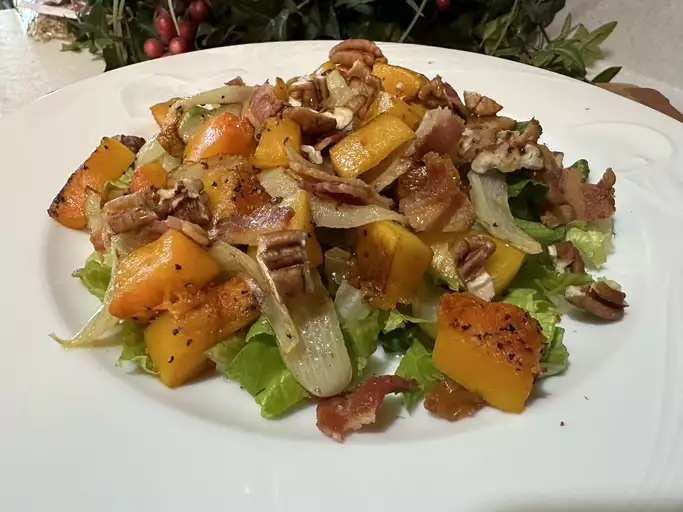

Roasted butternut Squash Salad

This butternut squash salad with raisins, onions, crispy bacon, and romaine
lettuce is served warm. Simple and delicious!
Ingredients
1 medium butternut squash, halved
lengthwise and seeded
1 tablespoon olive oil, or as needed
6 slices bacon
1 cup sliced onion
8 cups chopped romaine lettuce
⅓ cup pecans, toasted and chopped
⅓ cup raisins
2 tablespoons maple syrup, or to taste
Directions
step 1
Preheat the oven to 450 degrees F (230 degrees C).
step 2
Brush cut sides of butternut squash with olive oil. Wrap each squash half tightly in aluminum foil.step 3
Roast squash halves in the preheated oven until they begin to soften, about 20
minutes. Remove squash from the oven and let sit until cool enough to handle.
Remove foil and slice into 3/4-inch thick slices. Remove skin from each slice and
cut into 3/4-inch cubes. Set aside 8 cups of the cubed squash, reserving any
remaining squash for another use.step 4
Place bacon in a large skillet and cook over medium-high heat, turning
occasionally, until crispy, 10 to 12 minutes. Remove bacon and drain on paper
towels. Add onions to the skillet and cook in the bacon grease for 2 to 3 minutes.
Add 8 cups squash and cook, tossing occasionally, until onions are soft and
beginning to caramelize, and squash cubes are tender, 10 to 15 minutes.step 5
Place romaine lettuce in a large serving bowl; crumble bacon on top and add
pecans and raisins. Add butternut squash-onion mixture; toss to combine.
Drizzle with maple syrup and serve warm.
Recipe Tip
You can cook the butternut squash on an outdoor grill over indirect heat, if
you prefer